No. 01
No. 01
৪০+
Years of craft
The waves that built Urmi — flowing past, in steady current.
See the Story →
No. 01
 No. 02
No. 02
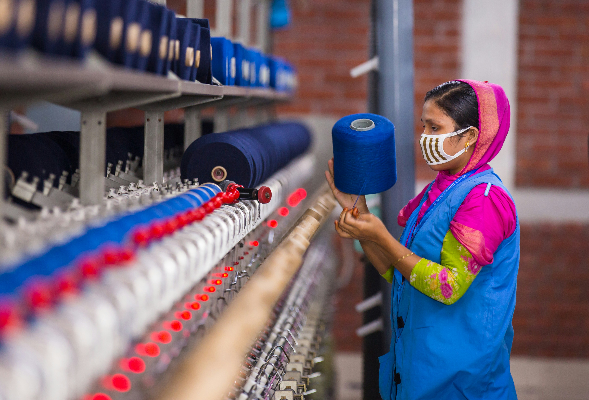
No. 03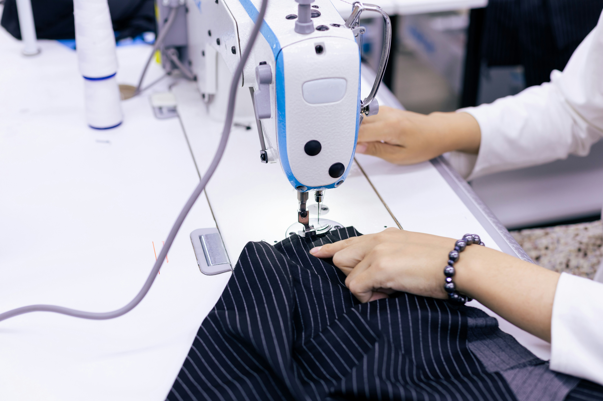
No. 04Every figure here is audited and updated quarterly — the fabric we weave today is the fabric we'll measure tomorrow.
Garments / day
Hands shaping every thread
m³ water purified / day
Global brands
Last audit · Q1 2026 · Better Works + GRI verified
→ See sustainability detailYarn enters one end. The world wears the other.
Vertically integrated under one roof — each stage feeds the next, and innovation rides between them as a continuous wave.
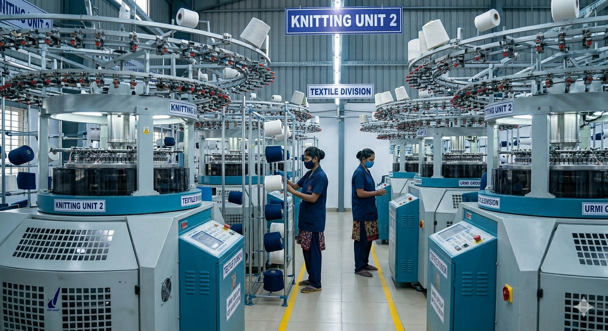
25,000 kg yarn / day
84 knitting machines turning yarn into fabric.
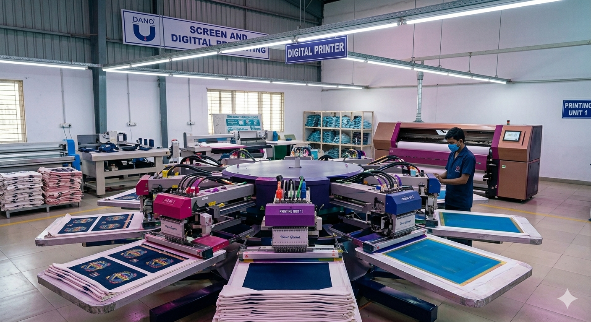
40,000 pcs / day
Carousel machines · water-based, low-impact dye.
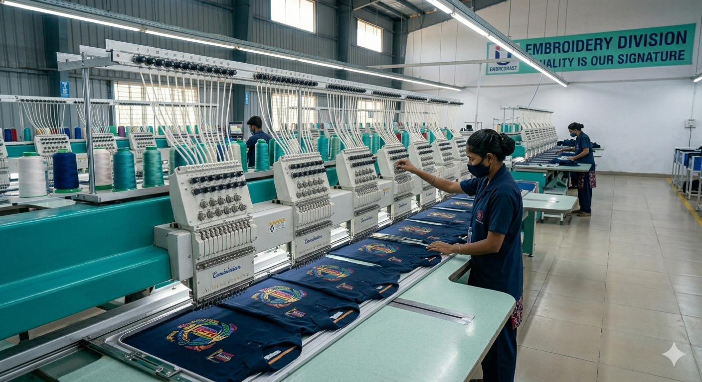
3M stitches / day
Heritage technique, programmed precision.
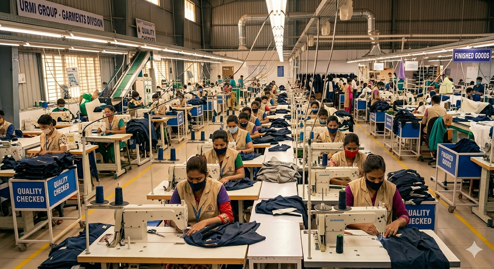
150,000 pcs / day
90 lines · 8,000 hands · precision cut and sewn.
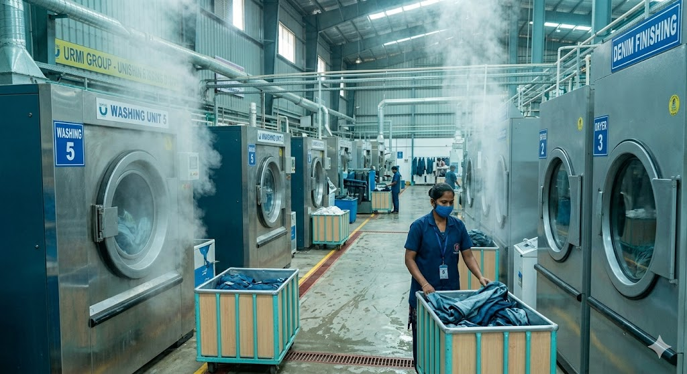
Closed-loop water
Acid · stone · pigment · zero discharge.
Operating since 1970
Bangladesh's rivers, then the world's oceans.
25,000 kg yarn / day
40,000 pcs / day
3M stitches / day
150,000 pcs / day
Closed-loop water
Operating since 1970
Six departments. One unbroken wave — and the next improvement is already building.
Tour all six on a factory visit →The river leaves cleaner than it arrived — Bangladesh's first Full-Green RMG group.
LEED Certified · JV with Toray Japan
Bangladesh's first vertically integrated Full-Green RMG group — every site audited, every metric reported.
Inspired by the river that built Bangladesh — we make textiles that leave the water cleaner than they found it.
Every shift, every stitch, every drop — audited annually by international standards bodies.
Read the ManifestoRead each in full in our annual sustainability report.
Five families. One thread of intention.
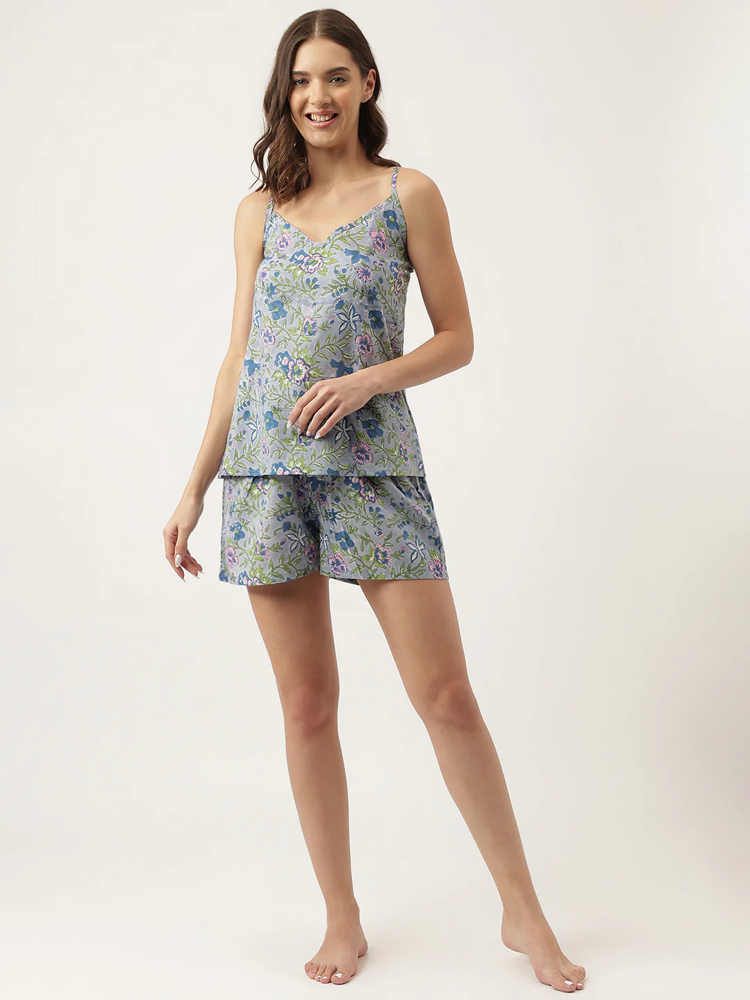
(01)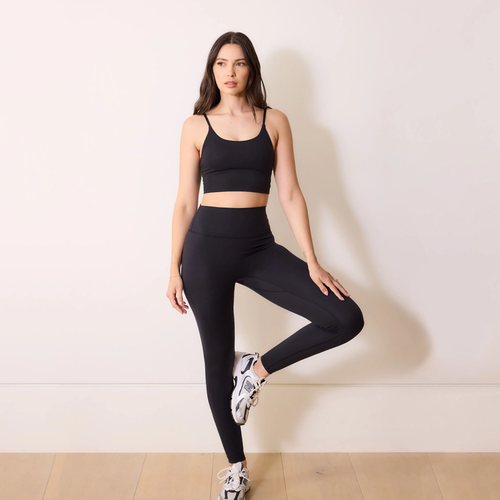
(02)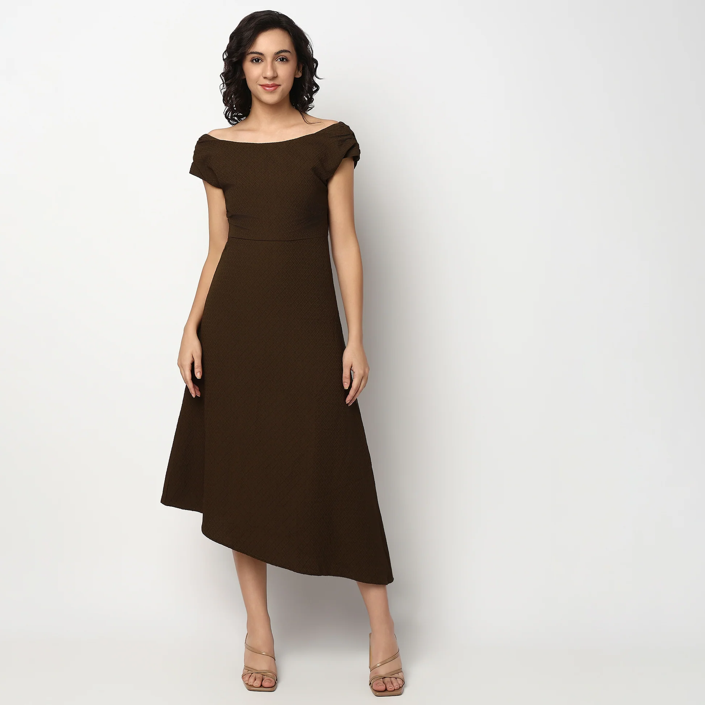
(03)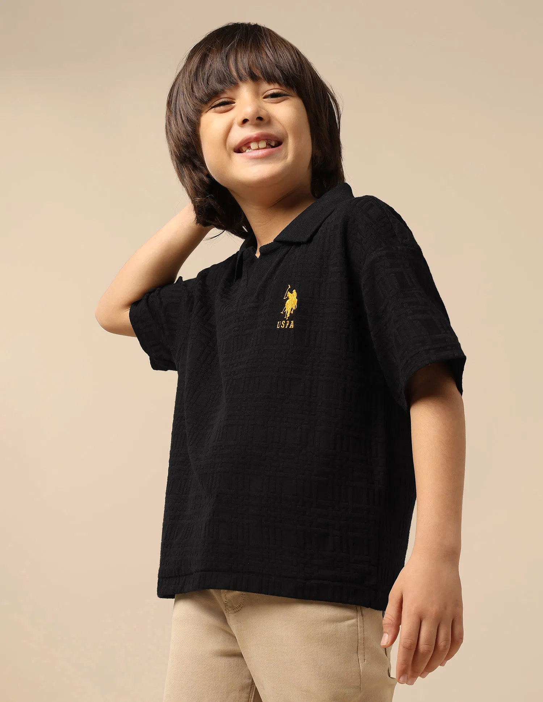
(04)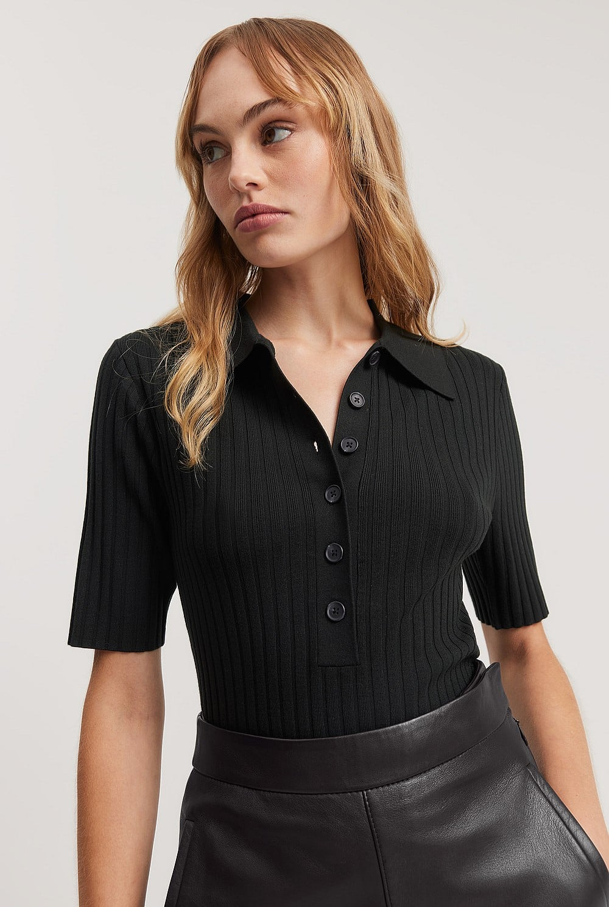
(05)Five families, five fits. All made on a single river.
Request Sample PackFrom Bangladesh to the world — every shipment trackable, every shift accounted for.
Three sites operating to a single playbook: own water treatment, on-site child care, on-site medical.

Every site runs its own water treatment plant, on-site childcare, and medical facilities.
Six certifications. Audited annually by international standards bodies. Verifiable claims, not marketing copy.
A dozen honours from BGMEA, HSBC, and the Government — earned every audit, every export, every shift on the floor.
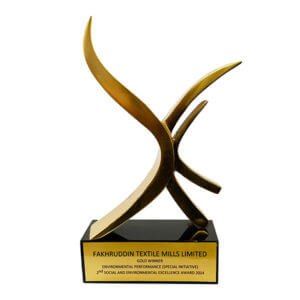
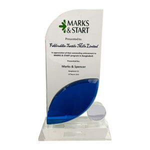
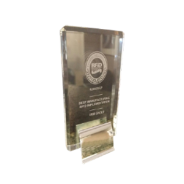
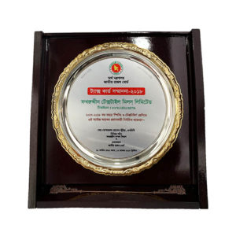
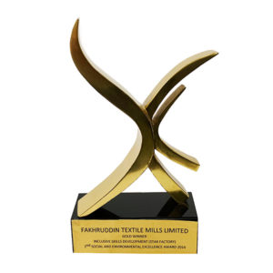
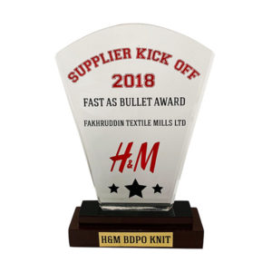
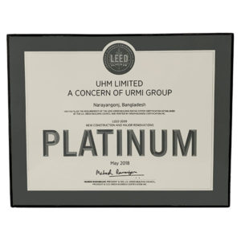
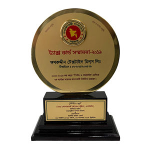
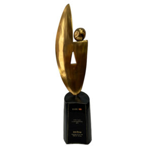
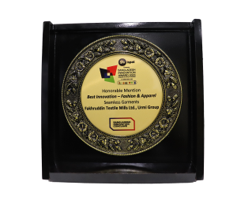
Whether you're a global buyer, a young designer, or a future colleague — there's a place for you here.